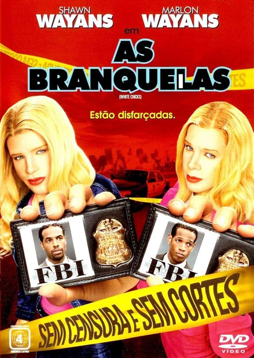

|  |
Diretor: Keenen Ivory Wayans Com: Marlon Wayans, Shawn Wayans, Terry Crews Gênero: Comédia - Legendado/Dublado Censura: 12 Lançamento: 27 de agosto de 2004 Tempo de duração: 109 minutos Sinopse: Dois irmãos agentes do FBI, Marcus e Kevin Copeland, acidentalmente evitam que bandidos sejam presos em uma apreensão de drogas. Como castigo, eles são forçados a escoltar um par de socialites nos Hamptons. Porém, quando as meninas descobrem o plano da agência, se recusam a ir. Sem opções, Marcus e Kevin decidem posar como as irmãs, transformando-se de homens afro-americanos em um par de loiras. Assistir |
Trailer: